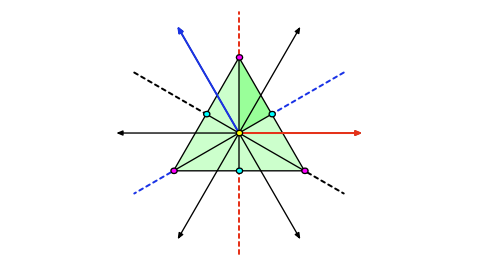
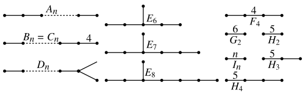
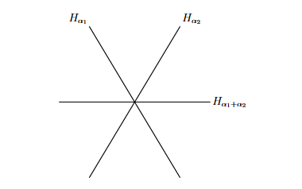
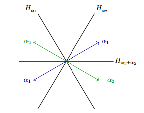
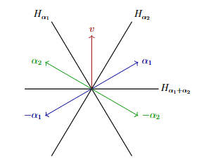
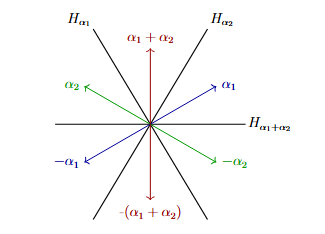

Coxeter Groups and the A2 Realization

UCSB Spring 04 Course Notes on Coxeter Groups Chapter 1
Symmetry is one of those concepts that shows up in various fields across
mathematics in different shapes and forms. In abstract algebra, it shows up
in the form of groups; in geometry, it shows up in forms of reflections and rotations,
in addition to their shapes that are preserved. Coxeter groups can be thought of as groups
that are their geometry, in a precise manner. The idea is quite simple: take some collections
of mirrors, in which elements reflect upon (we’ll call these hyperplanes in Euclidean space),
close them under composition, and ask what sort of groups you can get. The type \(A_2\) case is
the simplest non-trivial example, which we will go over. The goal here is as follows: take some
abstract group generated by some set of generators and relations, realize this as concrete linear maps,
and showcase it visually via the symmetries of an equilateral triangle.
We first define some important concepts in order to construct the geometric representation below.
Definition 1.1.
Let \(V = \mathbb{R}^n\) be a vector space
with the inner product \(\langle v_1, v_2 \rangle\) where \(v_1,v_2 \in V\).
A reflection in \(V\) with respect to a non-zero vector \(\alpha \in V\)
is a linear map \(s_\alpha : V \to V\) such that:
-
\(s_\alpha (\alpha) = -\alpha\)
-
\(s_\alpha(v) = v\) for all \(v \in H_\alpha := \{v \in V
\mid \langle v, \alpha \rangle = 0\}\)
We call \(H_\alpha\) to be the hyperplane that is orthogonal to \(\alpha\).
Definition 1.2.
A Coxeter system is a pair \((W, S)\) consisting of a group \(W\) and
a finite set of generators \(S \subset W\), where \(W\) is defined by
$$W = \langle s_1,\ldots,s_n \in S \mid s_is_js_i \cdots = s_js_is_j \cdots, s_i^2 = 1 \text{ for all }i \rangle$$
and \(m : S \times S \to \mathbb{Z}_{\geq 1} \cup \{\infty\}\) is a function where
\(m(s_i, s_j) = m(s_j, s_i)\) denotes the order of the product \(s_is_j\) in \(W\), with
\(m(s_i, s_i) = 1\) (since \(s_i^2 = 1\)) and \(m(s_i, s_j) \geq 2\) for all \(s_i \neq s_j\) in \(S\).
The braid-like relation \(s_is_js_i \cdots = s_js_is_j \cdots\) then has exactly
\(m(s_i, s_j)\) terms on each side, equivalently written \((s_is_j)^{m(s_i,s_j)} = 1\).
When \(m(s_i, s_j) = \infty\), no relation between \(s_i\) and \(s_j\) is imposed.
The above is essentially describing the group generated by reflections, where \(m(s_i, s_j)\)
denotes the order of the product \(s_is_j\) in \(W\) (which we will see more concretely via the
geometric representation). Indeed, if you reflect along the same hyperplane twice you return to where
you started, hence \(s_i^2 = 1\). The relation \((s_is_j)^{m(s_i,s_j)} = 1\) then captures
how many times you must alternate between two reflections to return to the identity — that is,
the order of the element \(s_is_j\) in \(W\).
The Type \(A_2\) Coxeter Group
Consider the group \(W = \langle s_1, s_2 \mid s_1^2 = 1 = s_2^2, s_1s_2s_1 = s_2s_1s_2\rangle\) and
\(V = \text{span}_\mathbb{R}\{\alpha_1, \alpha_2\}\) where \(\alpha_1\) and \(\alpha_2\) are the simple roots in relation
to the generators \(s_1\) and \(s_2\) respectively. Note that the symmetric group \(S_3\) is generated by two
transpositions which satisfies the same presentation as \(W\), and thus \(W \cong S_3\).
There is a convenient graphic presentation to describe a Coxeter group using a labeled graph where
each vertex corresponds to a generator, and an edge between \(i\) and \(j\) is labelled \(m_{ij}\)
whenever \(m_{ij} \geq 3\). While we will only focus on the type \(A_2\) case, below are some
Coxeter graphs for the finite Coxeter groups:

Observe that type \(A_2\) has two vertices (two generators) with one edge connecting it. Hence, the
Coxeter group \(W\) defined about is in fact the Coxeter group of type \(A_2\) since \(m(s_1, s_2) = 3\).
The Geometric Representation of \(W\)
First, we build the vector space \(V\) over \(\mathbb{R}\) with basis \(\{\alpha_s \mid s \in S\}\). i.e.
one basis vector per generator. These \(\alpha_s\) are the simple roots; we have already
constructed this from the previous section:
$$W = \langle s_1, s_2 \mid s_1^2 = 1 = s_2^2, s_1s_2s_1 = s_2s_1s_2\rangle \text{ and }
V = \text{span}_\mathbb{R}\{\alpha_1, \alpha_2\}$$
We can now start to visualize our hyperplane arrangement via the symmetries of an equilateral
triangle.

We will go over why there are three hyperplanes instead of two, but for now, this geometric
presentation will suffice. In the first section, we defined \(\alpha\) to be a vector
orthogonal to the its respective hyperplane \(H_\alpha\). We can thus draw our two basis vectors,
\(\alpha_1, \alpha_2\) on to our diagram, as well as its negative, as follows:

Note that each vector is a unit vector. i.e.
the length of each vector is \(1\). We now want to define the bilinear form \(B\)
as well as the reflection
formula. However, it may be useful to think of this
geometrically via vector projections and the angle between them before
laying out the formula. Consider some vector \(v\) as shown below:

It may be obvious to see that, if we were to reflect \(v\) along \(H_{\alpha_1}\), it will
land precisely at the vector \(\alpha_2\), but we want to try to understand this in a more
precise manner. Consider the projection of \(v\) onto the vector that is orthogonal to \(H_{\alpha_1}\),
in this case, it would be the vector \(\alpha_1\). Since we are working in the context of an equilateral
triangle, the angle between each "adjacent" vector is \(\theta = \frac{\pi}{3}\). Let \(k\) be the
projection of \(v\) onto \(\alpha_1\). Then, \(k = ||v|| \cos(\frac{\pi}{3})\). Observe that \(v\)
must move in the opposite direction as \(\alpha_1\) in order to be reflected by \(H_{\alpha_1}\). Hence,
we have \(-k \cdot \alpha_1\). Finally, we must do this same operation twice, and thus we would indeed have
\(2(-k \cdot \alpha_1)\). Formally, we can define the bilinear form in \(A_2\) as follows:
$$
(\alpha_i, \alpha_j) = \begin{cases}1 & \text{if } i = j \\ -\cos(\frac{\pi}{3})
& \text{if }i \neq j \end{cases}
$$
and thus our reflection formula to be: \(s_{\alpha}(v) = v - 2(\alpha, v)\alpha\). Let us compute
\(s_{\alpha_1}(\alpha_2)\). By our formula we would get:
$$
\begin{align*}
s_{\alpha_1}(\alpha_2) &= \alpha_2 - 2(\alpha_1, \alpha_2)\alpha_1\\
&= \alpha_2 - 2\left(-\frac{1}{2}\right)\alpha_1 = \alpha_2 + \alpha_1\\
&= \alpha_1 + \alpha_2
\end{align*}
$$
Now, we can add our new vector to our \(A_2\) hyperplane arrangement:

The above should make it clear why there are three hyperplanes instead of two. While we did
not compute it explicitly, if we were to reflect say \(\alpha_2\) via \(H_{\alpha_1}\), then
we would indeed obtain \(-(\alpha_1 + \alpha_2)\), which would be the reflection of the root
\(\alpha_1 + \alpha_2\) along its orthogonal hyperplane \(H_{\alpha_1 + \alpha_2}\). We now define
the root system explicitly.
Definition 2.1.
Let \((W,S)\) be a Coxeter system with the geometric representation \(s : W \to \text{GL}(V)\).
The root system of \(W\) is the set
$$\Phi = \{w(\alpha_s) \mid w \in W, s \in S\} \subset V$$of all vectors obtained by
applying the group elements to the simple roots.
Moreover, we have the notion of the set of positive and negative roots denoted by \(\Phi^+\)
and \(\Phi^-\) respectively. Without going into too much detail, by the total ordering, the
root system decomposes into the set of positive and negative roots. i.e. \(\Phi = \Phi^+ \sqcup \Phi^-\).
By definition, our simple roots (\(\alpha_1\) and \(\alpha_2\) in our \(A_2\) case) are positive,
and so we define all vectors spanned by the simple roots to be positive, and all roots spanned
by the negative of the simple roots to be negative. Hence, in our \(A_2\) case, the set of
positive and negative roots are:
$$
\Phi^+ = \{\alpha_1, \alpha_2, \alpha_1 + \alpha_2\}, \ \
\Phi^- = \{-\alpha_1, -\alpha_2, -(\alpha_1 + \alpha_2)\}
$$
Representing \(A_2\) via Matrices
The following is predominantly just computing each reflection via the reflection formula
we had obtained from the previous section. The idea is simple, compute the each reflection and
for each reflection (or product of generators), we can obtain its respective matricecs where
the columns are the simple roots (basis). We will consider the first column to be \(\alpha_1\)
and the second column to be \(\alpha_2\). We first define our map, which is something I had
glossed over in the previous section. The claim is that the mapping
$$s : W \to \text{GL(V)}$$is a faithful representation. Suppose we map the generator
\(s_1\) onto \(\rho_{s_1}\). There are two computations to be done: \(s_{\alpha_1}(\alpha_1)\) and
\(s_{\alpha_1}(\alpha_2)\). The former is the simplest one, where reflecting \(\alpha_1\) along
\(H_{\alpha_1}\) yields \(-\alpha_1\). The latter was computed earlier; where \(s_{\alpha_1}(\alpha_2)
= \alpha_1 + \alpha_2\). Thus we have the following matrix:
$$
\rho_{s_1} = \begin{pmatrix} -1 & 1 \\ 0 & 1 \end{pmatrix}
$$
Proceeding with the rest of the roots (including
the one we just did), we obtain the following set of matrices:
$$
\begin{align*}
& s_1 \mapsto \rho_{s_1} = \begin{pmatrix}
-1 & 1 \\ 0 & 1
\end{pmatrix}, \ \ \ s_2 \mapsto \rho_{s_2} = \begin{pmatrix}
1 & 0 \\ 1 & -1
\end{pmatrix}, \ \ \
s_1s_2 \mapsto \rho_{s_1}\rho_{s_2} = \begin{pmatrix}
0 & -1 \\ 1 & -1
\end{pmatrix}\\
& s_2s_1 \mapsto \rho_{s_2}\rho_{s_1} = \begin{pmatrix}
-1 & 1 \\ -1 & 0
\end{pmatrix}, \ \ \
s_1s_2s_1 \mapsto \rho_{s_1}\rho_{s_2}\rho_{s_1} = \begin{pmatrix}
0 & -1 \\ -1 & 0
\end{pmatrix}, \ \ \
e \mapsto \rho_e = \begin{pmatrix}
1 & 0 \\ 0 & 1
\end{pmatrix}
\end{align*}
$$
Hence, we have a faithful representation, specifically for the \(A_2\) case:
$$
\rho: W \to \text{GL}_2(\mathbb{R})
$$
where we realized \(W\) as reflections acting on \(V\).